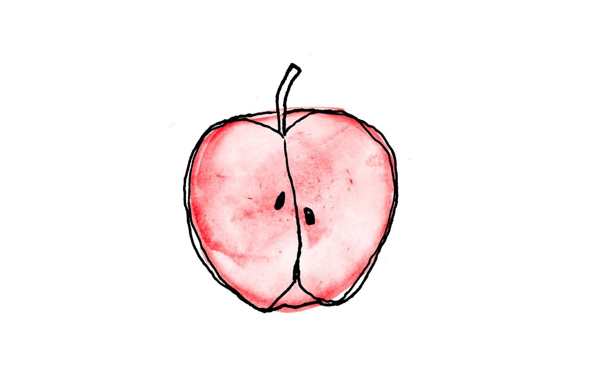

What is our identity and what does an identity consist of? Refugees that are in an asylum come into a new
country, they have to face their traumas and struggle with all the uncertainties that come with being a refugee.
Besides all of that, they often land in an identity crisis as well.
They deal with questions as: who am
I , who was I and who would I want to be now? It is hard to be yourself in an environment that maybe won’t
accept who you are. Some of the refugees were not accepted in their home country, hence they fled to the
Netherlands.
Rainbow refugees often have multiple traumas. One of them has to do with being a refugee, another one is being themself: a rainbow refugee. We have to take in consideration that the pressure of freedom in the Netherlands can be overwhelming and confusing. Next to that rainbow refugees are often afraid to own their identity, if they even know what their identity is. We feel like it is important to keep in mind that we do not have to talk about their deepest problems right away, but try to make them feel at ease and get their trust. Let’s talk about their hopes, dreams and fears, but first let’s get to know each other just like we, a friend to friend, do.
Refugees and rainbow refugees can feel very lost and end up in a crisis. They’ve left their, families, jobs, cities, homes and maybe even their identity. It is time to explore themselves again. Who are they? What do they like? How do they like to dress? Who do they want to be? It is important to give them a helping hand during this crisis. Maybe by showing them stories of others who have found their identity in the city of Utrecht, let them explore the city as well as themselves and also explore other persons identities, but take it slow!
We can’t address it too much that it is okay to ask for help. Bring them in contact with people and organisations that can help them.
Exploring your identity is an important topic for rainbow refugees, but also valuable for other refugees, because everyone has recently moved to a totally new environment and they need to rediscover themselves in this new environment.
That’s why we came up with a card game that can help you discover your identity. We kept in mind that we wanted the questions not to be too direct, that’s why we decided to print them on regular playing cards. So you can choose for yourself if you want to discuss the questions or just play a card game.
This card game asks personal questions in an accessible way. The card game can help you explore your identity and brings people together. The questions are being introduced with a fun fact about food, since that’s the thing that connects us all and can make us feel very comfortable.